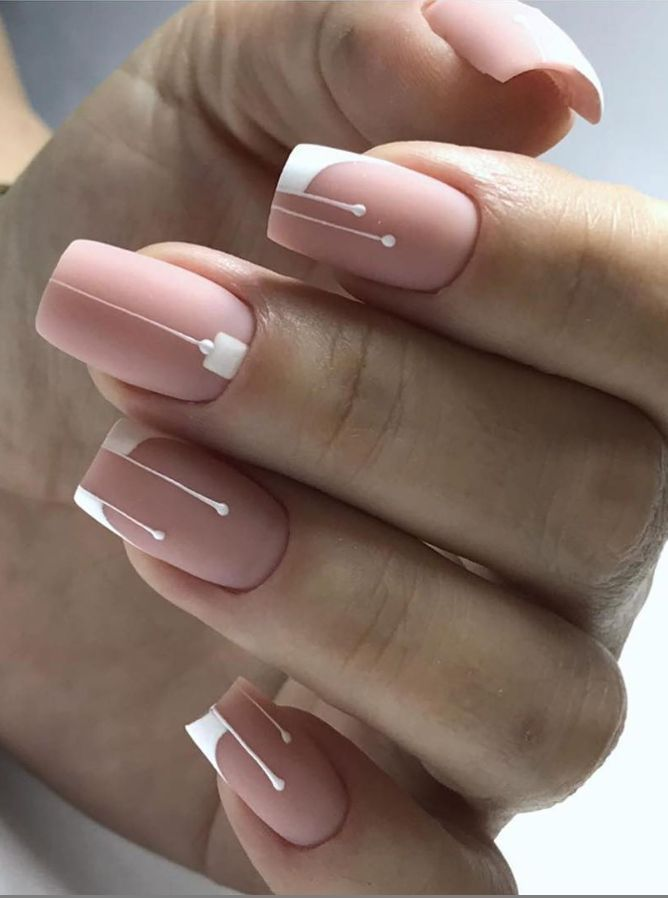
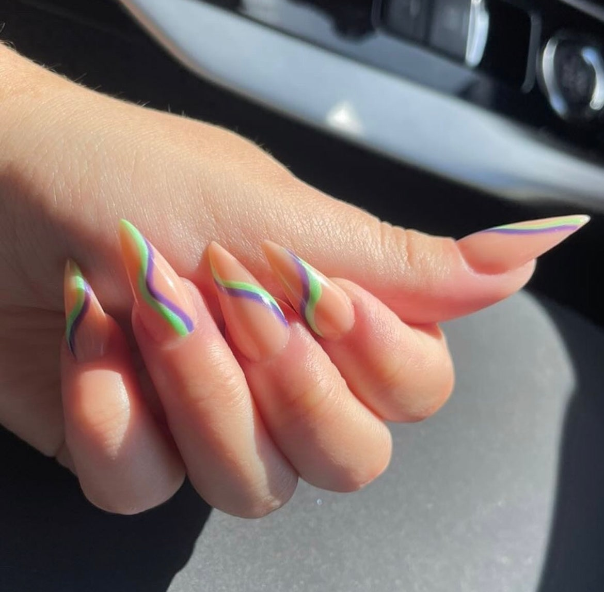
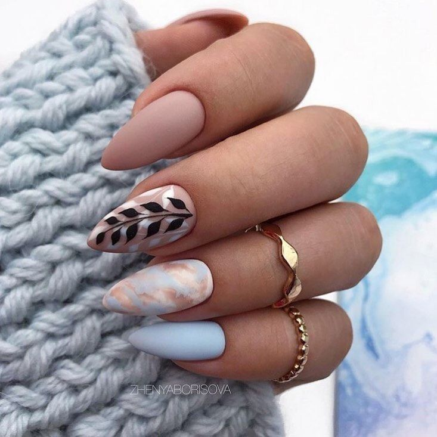
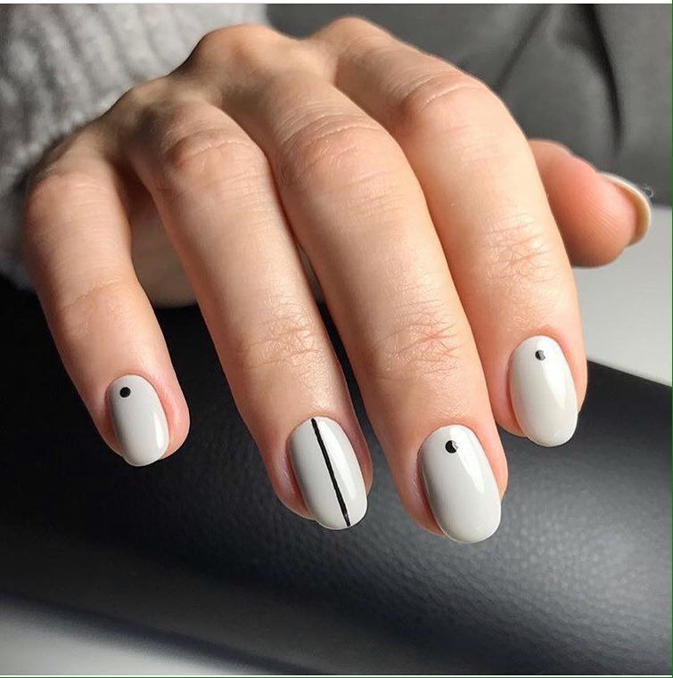

Elige cómo las quieres
Tenemos esmaltado semipermanente, gel x, acrílicas y técnicas. Si tienes alguna idea en mente solo me la haces saber.
| Nombre | Descripción | Ejemplo |
|---|---|---|
| SQUARE | Generalmente es utilizado cuando se quiere una longitud de uñas medianas. |

|
| STILETTO | Es muy utilizado hoy en día, su estilo alargado lo hace lucir atractivo a los ojos. |

|
| ALMOND | Suele ser utilizado por chicas que se cuidan mucho las uñas, debido a que esmuy fácil que se lleguen a romper, sus lados no son muy fuertes. Se pueden lucir de manera muy elegante. |

|
| ROUND | Si te gusta lucir unas uñas cortas, probablemente, esta es la mejor opción, no suelen quebrarse debido a lo cortas que son. Suelen pasar desapercibidas pero al ponerles atención deslubran. |

|
| - | - | - |